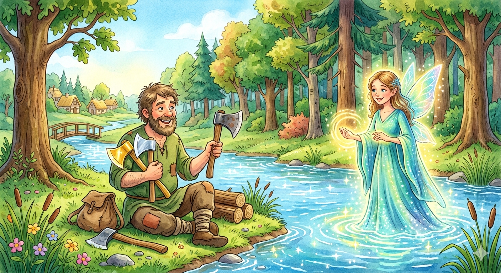

The Honest Woodcutter

Once upon a time, there lived a poor but hardworking woodcutter in a small village near a dense forest. Every day, he would go into the woods to chop down dead trees and sell the wood in the market to earn a humble living.
One afternoon, the woodcutter was working near the bank of a deep river. As he was swinging his axe to cut a branch, the iron head slipped from the wooden handle and flew straight into the rushing water. The river was far too deep and the current too fast for him to retrieve it.
The woodcutter sat on the riverbank and began to weep bitterly. His axe was his only means of livelihood, and without it, he had no way to feed his family.
Suddenly, the waters of the river began to glow, and a kind fairy emerged. She asked the woodcutter why he was crying. He explained his tragic loss and how poor he was.
Moved by his sorrow, the fairy dove into the water. A moment later, she resurfaced holding a shining golden axe. "Is this your axe?" she asked. The woodcutter looked at the precious metal and honestly replied, "No, that is not my axe."
The fairy dove into the water again and this time brought up a gleaming silver axe. "Is this yours?" she asked. Again, the woodcutter shook his head and said, "No, that is not mine either."
The fairy went into the river a third time and finally brought up his original, worn-out iron axe with the wooden handle. The woodcutter's face lit up with joy, and he happily exclaimed, "Yes! That is my axe!"
The fairy was incredibly impressed by the man’s honesty and integrity. Because he had refused to claim the valuable gold and silver axes that did not belong to him, she decided to reward him. She handed him his own iron axe and generously gifted him the golden and silver axes as well.
The woodcutter thanked the fairy gratefully and returned home a happy and wealthy man.